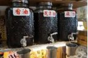

開 店 小 撇 步
✧人情 記帳 本
賒帳是農業社 會下特有的消 費模式。農人收 入來自農作收 成，經濟較不穩 定，早期社會因 此發展出顧客 先向店家賒帳， 待有收入時再 償還的消費模 式。雜貨店的客 群主要是鄉里 鄰居，老闆與顧 客泰半熟識，是 以店家透過賒 帳給予顧客方 便，建立良好關 係，買賣商品， 亦買賣人情。雖 然今日已少有 賒帳的行為，但 許多雜貨店仍 留有此消費模 式的痕跡。
※天紀商號 手寫賒帳 單 天紀商號 提供
--------------------------------------------------------------------------------
✧巧思 陳列 架
雜貨店中的貨 架位置、商品分 類、店內擺設均 出自各店老闆 的喜好，相較連 鎖商店系統化 的設計更具特 色。而看似簡單 的陳列其實蘊 藏許多巧思，比 如方便清潔、省 力裝置、增加曝 光等，讓人力精 簡的雜貨店彷 彿多了一個店 員。
※興隆行 油罐 ｜複製 品


--------------------------------------------------------------------------------
✧臺南 的醬 料， 臺南人日 常味
生活不出「食、 衣、住、行、育、 樂」，「食」字當 前，可見飲食的 首要與重要。身 為府城古都的臺南，擁有厚實 的人文底蘊，讓 身處其中的常 民不光生活自 有步調，連「吃」 也各有哲理。談 到吃，食材講究 之餘，「調味」亦 為關鍵，懂吃的 臺南人除各有 擁護的店家，對 於醬料更有所 堅持，使得臺南 在地醬料品牌 至今依然眾多。 雜貨店為這些 在地醬料的主 要銷路，不但呈 現臺南的地區 型產業鏈特色， 更保留各區臺 南人的日常味。

--------------------------------------------------------------------------------
✧靈感 進貨 單
不似便利超商 採用電子系統 計算銷售情況， 決定進貨品項 及數量，雜貨店 的進貨原則只 有一個──「老 闆的靈感」。靈 感並非天外飛 來，靠得是老闆 對買賣及客群 的熟悉，才能精 準判斷新商品 進貨與否及舊 商品的進貨數 量。現今雜貨店 的貨源多來自 各類中盤商，而 中盤商被動等 待店家叫貨之 外，更定期到店 盤貨，主動確認 進貨需求，增加 商機，不單可見 零售業競爭激 烈，亦反映出雜 貨店除了櫃檯 前的銷售，櫃檯 後其實與許多 行業緊密連結。
--------------------------------------------------------------------------------
✧樸實 經營 術
比起連鎖商店 搭配廣告宣傳、 集點活動等五 花八門的手法 吸引顧客，雜貨 店的經營術顯 得被動，除偶有 老闆自製手寫 標語，多數店家 的行銷僅有中 盤商自行張貼 的品牌廣告貼 紙及商品海報， 較為積極的是 以長時間的營 業增加銷售可 能，並將自家人 作為主要人力 降低成本。而雜 貨店於現代經 營術的夾擊下 仍佔有一席之 地，主要來自顧 客關係的經營， 雖是各家各法， 自有訣竅，但共 通點是樸實純 粹的人情味。